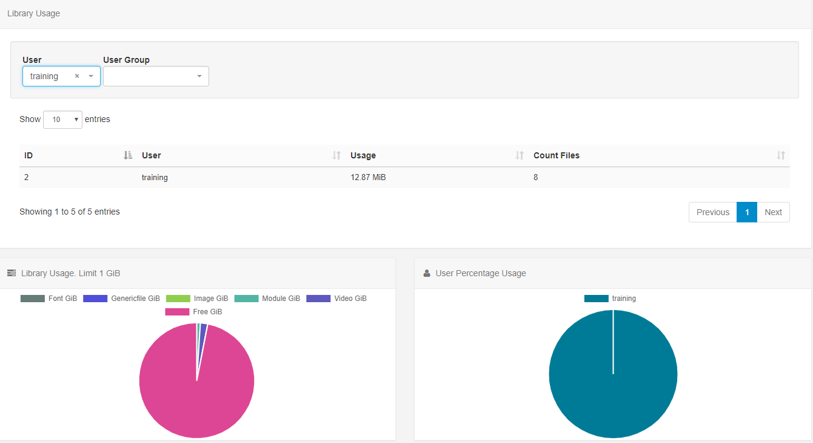

Reporting
SFC Technology provides useful metrics for Users, who have the relevant permissions, to view within the CMS. These are designed to provide a centralised area for analysis into Display performance and usage and are available from the Reporting section on the menu.
Display Statistics
The CMS records the bandwidth used by each Display when connecting to XMDS for content and when reporting back Display information.
The default view for the bandwidth chart is a total per Display.
Filter to one Display to see each call that the Player makes to XMDS in isolation.
Filtering to just one Display helps to better understand where bandwidth was used.
Availability
The CMS records all Displays on/offline events to provide further information regarding a Displays availability.
Proof of Play
Each Display collects information on Layout and Media items they show and can provide a Proof of Play report by:
- Layout
- Media
- Media on Layout
Enable stats reporting can be toggled on/off by editing Display Profiles.
Library Usage
View Library usage for all Users or filter to have an overview of usage by individual User/User Group.
